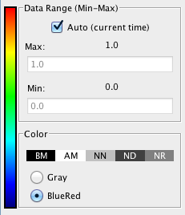

The image data from spatial simulations are displayed in the results dialog. You can also generate a Spatial Plot using defined regions (see Region of Interest Selection Tools), a Time Plot using points, or a Kymograph which displays a line scan over time.
Time: The data time point that is displayed. Enter a value in the text field or click once on the selection arrow. Use the up and down arrow keys on your keyboard to select a time point. The image will update when the time point is changed.
All Variables: All Variables from the model simulation are displayed in the variable list to the left of the results viewer. A drop down menu allows you to list a single class of variables: Volume, Membrane or User Functions, Region sizes.
Data Value Range:

Auto Range: Select to have the software automatically adjust the image display pixel intensities based on the minimum and maximum data values for the selected time point. The intensities are automatically converted to and displayed as concentrations.
Min/Max: Deselect Auto Range and type in the value(s) for the minimum and/or maximum; press enter to accept the values and to update the image display.
Color: View the image data either in Grayscale or in a Blue-Red color map where colors are mapped according to concentration. At times some values will be displayed in colors other than the selected color map because they do not fall within the specified range.
Color Value:
BM: Below minimum color
AM: Above minimum color
NN: Not a number color
IL: Illegal value color
NR: No range color